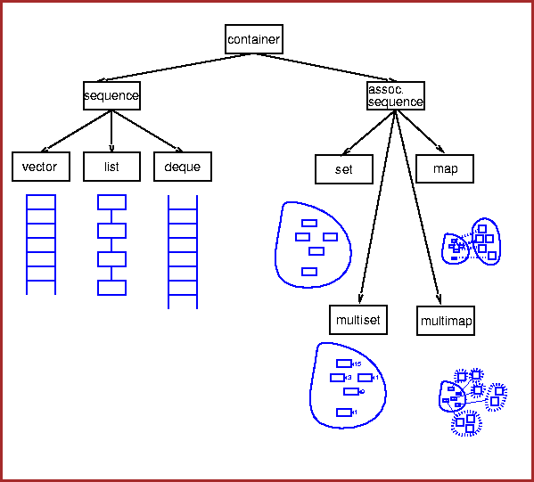

StAssociationMaker |
Since more people look at the web page first, I've put more work in updating this page than on updating the LaTeX manual. Please contact me with suggestions or corrections.
The current StAssociationMaker User's Guide & Reference Manual is somewhat outdated (although still contains useful information). Gene made a nice page where the PS documentation can be obtained. Click here to get to Gene's page. The overall idea has remained the same, but more associations have been added and the names of the relevant multimaps have changed because of this new diversity. For help regarding multimaps, which are the crux of StAssociationMaker, I have added a more detailed description in the Quick Glance section. There are maps for Tracks, Vertices and Hits. For quick reference, look at the brief class description below. This gives a list of the most relevant multimap type definitions (or "What was the name of the map between TPC Hits?") , and the methods to get the maps from the StAssociationMaker class (or "How do I get the maps once I have a pointer to the Association Maker?").
For many analyses, specially those that need only single particle matches, the StMiniMcEvent and StMiniMcMaker packages are probably what you need. This has been developed for analyses of single particle spectra by the Spectra and High-pt working groups (Bum Choi and Manuel Calderon de la Barca as code developers). This package is run after StAssociationMaker to store the information of the matched tracks into a TTree for later analysis of efficiency, acceptance, weak decay backgrounds, ghost tracks, split tracks and merged tracks. It has primary and global track matches for efficiency calculations. The documentation for StMiniMcMaker is here. StMiniMcMaker runs in all standard simulation productions, the output is stored in xxx.minimc.root files, and are indexed by the File Catalog, so using them is the easiest way to get started doing efficiency calculations.
The StAssociationMaker package provides the functionality to analyze Monte Carlo data contained in StMcEvent and reconstructed data contained in StEvent. It relates the objects from the 2 packages according to user defined criteria. The relationship is established through a multimap. For a better understanding of the workings of the Maker, I'll very briefly discuss the idea behind a multimap.
A multimap is
a type of C++
Standard
Template Library
associative container.
The STL provides several containers with different features. Examples
are lists, vectors, and associative arrays. In general, one can
add and remove objects from a container. The C++ standard library
containers were designed to meet 2 criteria: to provide as much freedom
as possible in the design of individual containers and at the same
time to provide a common interface to users. This allows to make
each container as efficient as possible for its intended use but
still enable users to write code that is independent of the
particular container being used.
The standard library defines two kinds of containers: sequences and
associative containers. A key idea for the standard containers is that
they should be logically interchangeable wherever reasonable. Users can
then choose between them depending on efficiency concerns and the
need for specialized operations. For example, if lookup based on
a key is common, a map can be used. If general list operations
dominate, a list can be used. If many additions and removals of
elements occur at the ends of the container, a deque (double-ended
queue), a stack, or a queue should be considered.
These are
illustrated in the figure below.

A map is nothing else than a sequence of (key, value) pairs that provides for
fast retrieval
of the value based on the key.
There is one main difference between the
map and the
multimap:in a map,
keys are UNIQUE. This means that if a phonebook were a map,
then each person would only
be able to have one phone number. Note that the phone number could be shared between
people
(only the keys
are unique). A multimap, on the other hand,
allows multiple keys. This means that if a phonebook were a multimap, then everyone
could have
as many phone numbers as they pleased.
One thing that help to picture the map and the multimap is the following.
Recall the definition is that they are "associative containers of
pairs of
objects". You can always think of a vector as an array. So if you have
a vector< int> then you can picture it like this:
| Vector: | 1 | 2 | 5 | 17 | 20 | 25 |
|---|
map< string,int, less< string> >.
| Map: | ("Brian",2034322043) | ("Manuel",6313448342) | ("Thomas",2034325829) |
|---|
phonebook["Manuel"] = 2034325637;
the entry for "Manuel" will be overwritten. Note that I can say
phonebook["Thomas"] = phonebook["Manuel"];
and I'll overwrite Thomas's phone number with mine. The 'values' can be repeated. By the way, a map supports indexing. Since there is one entry for each key (and only one) it is unambiguous which entry one wants so we can use the key as an index. A multimap doesn't support indexing, because there is still the ambiguity of having multiple entries. If we made the phonebook a
multimap< string, int, less< string> >
then we could have
|
|
Since you don't know a priori how many entries there are, that is why you need the 2 iterators, lower_bound and upper_bound, to loop over all the entries of a particular key in the multimap. You can think of them as the equivalent to
vector.begin();
and
vector.end();
(Remember that upper_bound will point to the first element greater than the key it takes as argument. ) The comparison is also important, so that the entries in the multimap are ordered. You'll find more discussion on iterators in the next section.
It is important to stress that every entry in the multimap is a key-value pair, regardless of whether the key has appeared before. This means that there is some redundancy. If you loop over a sequence of entries using lower_bound and upper_bound, ALL of the entries in that sequence will have the same key:
|
|
Now that we have an idea of what a multimap is supposed to do, we can get around to how does it do it. This section deals with what can one do with multimaps and specific features of them that will probably be commonly used for analysis purposes, and examples of these are found in StMcAnalysisMaker. For a more complete reference there is a nice guide for the STL ( Standard Template Library ) on the web given by SGI. Look in the multimap page for more information. And of course, pick up your favorite C++ guide and look for the section on multimaps.
You probably won't need this, unless you want to use a multimap in your code. But for completeness, I'll discuss it briefly. To instantiate a multimap, you basically need 3 things: The "thing" you'll use as a 'key', the "thing" you'll use as a 'value' and normally a means to compare the keys, so that the multimap can be ordered according to this comparison. Because one doesn't know a priori what these things are going to be, the concept of Templates is relevant here. One can have a multimap between integers and strings or strings and integers or really between any class and any other class. So the Template concept takes care of this nicely. If templates were not around, one would have to write code for any combination of classes that one could think of. Clearly, this would quickly become unmanageable. There is also a so called "allocator". All STL containers, vector, list, set, queue, bitset, map, multimap, and so on, have an allocator defined for them. Allocators manage memory allocation for a container, but one can define allocators for specialized applications. In most cases, the default allocator is sufficient. In StMcEvent and StAssociationMaker there was never a need for a specialized allocator, so I just mention it here for completeness. I also mention it because, although in most cases one doesn't even see the allocator specification when one instantiates a container, one has to put it in when using compilers like SUN CC 4.2 that don't support Template Default Arguments.
To clarify the above, let me show an example of the invocations
used in StAssociationMaker. The first multimap used is the one that
takes a pointer to a reconstructed Tpc Hit as the key (StTpcHit*)
and the 'value' is a pointer to the associated
Monte Carlo Tpc Hit (StMcTpcHit*).
For the comparison of the reconstructed Tpc Hits,
one is free to choose. Note that this comparison is NOT the comparison
used in the code to actually associate a reconstructed hit to a Monte Carlo
hit. This is only the comparison to order the entries in the map according
to some criterion. In the case of the phonebook, this "comparison" is just
alphabetical order. If the 'key' is something fairly common,
like an int, and the compiler supports default template
arguments, one can also omit the specification of the comparison
and by default it will take a 'less' type comparison for the keys. In
other words, if the 'key' in the multimap was an int, then
the default would be that
an entry whose key is 1 would be placed before an entry whose key is 2, and so on.
For more exotic types, one has to supply one's
own "alphabetical order" so the container is ordered.
For example, for the tpc hit multimaps, the "alphabetical order" is
based on the x, y, and z positions.
The instantiation of such a beast would be the following:
multimap< const StTpcHit*, const StMcTpcHit*, compTpcHit>
For the case of compilers with no Template default arguments, there would be
and additional argument giving the allocator, in this case to a pair of
const StTpcHit* and const StMcTpcHit*. In case
you're wondering, pair is also a template class.
The above definition then specifies what will be the 'key' in the multimap, what will be the 'value' and what is the comparison used for the keys. (I won't go into the details of how one defines the comparison, because this would mean getting to nuts-and-bolts type C++, and the intention is more to give a picture of multimaps). The same is done for the other multimaps.
Needless to say, if
one had to write this definition every time one wanted to instantiate
a multimap it would get cumbersome pretty soon. So we use type definitions,
or typedef's. In this way, we avoid having to write the same
big definition over and over and avoid caring whether we have to use
allocators or not. We do it once and give it a name, and then call this name
every time. For the above case the typedef is rcTpcHitMapType.
These are the types that one would then use for convenience in code
downstream of StAssociationMaker.
All the type definitions for the multimaps, multimap iterators
etc. are given in the
class description below.
Ok, so you have the maps. How do you use them once you have them? (I won't go into detail of how one actually FILLS them, because this task is probably not as common as using them in downstream code once they are already filled in StAssociationMaker.) One typically asks questions like "Has this monte carlo track been found?", "How many tracks were associated to it?", "I want to look closely at the associated tracks and see some of their properties." I will discuss now some of the methods (member functions) that multimaps provide that allow one to do these kinds of things.
The find method is used to find a particular 'key' in the multimap.
It takes as argument the key we want to find and returns an iterator that points
to the specified key. If the key is not found, then an iterator that points to
the end of the multimap (the "one after the last" element) is returned.
iterator find(const key_type& k);
To use this in code (using StEvent & StMcEvent) one would then do something like this:
StEvent* rEvent = 0;
rEvent = (StEvent*) GetInputDS("StEvent");
StMcEvent* mEvent = 0;
mEvent = ((StMcEventMaker*) gStChain->Maker("MCEvent"))->currentMcEvent();
StAssociationMaker* assoc = 0;
assoc = (StAssociationMaker*) gStChain->Maker("Associations");
rcTrackMapType* theTrackMap = 0;
theTrackMap = assoc->rcTrackMap();
StSPtrVecTrackNode& rcTrackNodes = rEvent->trackNodes();
StTrackNode* firstTrackNode = *(rcTrackNodes.begin());
StGlobalTrack* firstTrack = dynamic_cast< StGlobalTrack*>(firstTrackNode->track(global));
if (firstTrack){
rcTrackMapIter recTrkIterator = theTrackMap->find(firstTrack);
if (recTrkIterator != theTrackMap->end()) {
cout << "The First Track was found!" << endl;
}
}
The count method returns the number of entries in the map that
have the same key. So if you want to find out how many reconstructed
tracks were associated with a particular monte carlo track (or vice versa),
this method does
just that.
size_type count(const key_type& k) const;
In StMcAnalysisMaker this is used in one of the examples, counting the number of MC Tpc Hits associated with the first hit of Sector 1, Padrow 1:
rcTpcHitMapType* theHitMap = 0;
theHitMap = assoc->rcTpcHitMap();
// Example: look at hits associated with 1st REC hit in Tpc Hit collection.
StTpcHit* firstHit;
firstHit = *( rEvent->tpcHitCollection()->sector(1)->padrow(1)->hits().begin() );
cout << "Assigned First Hit " << endl;
cout << "This hit has " << theHitMap->count(firstHit) << " MC Hits associated with it."<< endl;
The more elaborate task of actually getting ALL the associated elements of a
particular key is done through the equal_range method. One reason
could be that we are looking for a particular one, but it's not necessarily the
first one, so we have to look at all of the associated elements to figure out
which one is the one we really want.
As an example, let's take our familiar phonebook.
Let's say you want to call Thomas Ullrich because StEvent is not working.
You know that it is a Tuesday so he happens to be in Brookhaven for the Sofi
meeting, so you want to call him there. So, for example,
you would query the phonebook to get the list of all of Thomas's phone numbers,
and then from the area code figure out which one is the one you want.
In another context, you might want to fill a histogram of the momentum resolution of an event. So you would need, for example, for each Track, find all its partners, and loop over them to either subtract their momenta directly and fill the histogram, or apply some cuts to weed unwanted tracks and then subtract the momenta and fill the histogram. In all cases, you need to find out what are the associated tracks for your track of interest so you can loop over them.
The way this can be done with the multimaps is via the equal_range
method, and the fact (this is important!) that the elements in the multimap
ARE ALREADY ORDERED. So all of the elements with the same key are already
placed next to each other! (Now isn't that convenient...) So you don't need
a method to build you a list of elements that have the key you want so you can
loop over them, the list already exists inside the multimap. If you know
your iterators, you're already thinking "Hmm, the only thing
I need to know is where that list begins and where that list ends." If you want
to know where is the first element in the multimap with a particular key, there is
a method to do this: lower_bound.
iterator lower_bound(const key_type& k);
This method is similar to
find except for one thing. The lower_bound
method returns an iterator to the first element in the multimap with the key
EQUAL TO OR GREATER THAN k. This means that if the object you're
looking for is not in the multimap, you will still get an iterator to some element in
the multimap, namely the first entry with a key greater than k
(whereas in find you get an iterator to the end of the multimap).
So you have the first element in the multimap with a particular key, what about
the last element with that same key (or should we say, the "next to last element")?
That is what upper_bound is for.
iterator upper_bound(const key_type& k);
This method returns an iterator to the first element in the multimap with the
key greater than k.
Why is this "greater than k" stuff useful?
Recall that for example, when looping over a vector using iterators,
one uses the begin() and end() methods. The end()
method returns an iterator to the "one after the last" element. The same
idea is applied for lower_bound(key) and upper_bound(key).
The difference is that we talk here about the one after the last element of those
with the requested key, not of the whole multimap. Incidentally, multimaps
also have a begin() and an end() method like all
STL containers.
To illustrate the ideas, think again of the phonebook.
For simplicity, assume the names are just one letter
long. So the keys are just 'A', 'B', 'C', and so on. Assume there are 5 phones under
'A', 0 under 'B', and 3 under 'C'.
A call to phonebook.lower_bound("A"); would return an
iterator to the first element of the map with key = 'A'. A call to
phonebook.upper_bound("A"); would return an iterator to the
first element in the multimap with key greater than 'A'. Since there are no
elements with 'B' as the key, then the iterator points to the first element
with 'C' as the key.
Now, what happens if we do phonebook.lower_bound("B"); and
phonebook.upper_bound("B");? In this case, BOTH methods
return an iterator to the first element with key greater than 'B', which
happens to be the first element with key='C' in our example. The advantage
of this is that when looping using iterators, this automatically guarantees
that if the element is not found, the loop will NOT be executed. One needs
no further if statements to check if the element was found or
not. Nice trick, isn't it?
So now we understand what lower_bound and upper_bound
do. But wait! Isn't it a pain in the neck to always be typing
two lines, using two methods, every time you want to loop over elements
with a common key? Yes, it is a pain. Normally one wants both bounds, right?
Well, this is the purpose of the equal_range method, the punchline
of this section.
pair< iterator, iterator> equal_range(const key_type& k);
The equal_range method returns both the upper and lower bound in
one go. But wait a minute! How can it return 2 things? That is why the return
type is pair< iterator, iterator> , so again the pair
template class creeps up on us. (Recall that a multimap is an associative
container of PAIRs of objects.)
The lower bound is stored as the first data
member of the pair, and the upper bound is stored as the second
data member of the pair. In your code, you will probably be using first
and second in two typical cases:
equal_range.
To illustrate, here is the code in StMcAnalysisMaker that loops over the associated hits of the first reconstructed TPC hit in Sector 1 and Padrow 1 and prints out the position of those hits:
StTpcHit* firstHit;
firstHit = *( rEvent->tpcHitCollection()->sector(1)->padrow(1)->hits().begin() );
cout << "Position of First Rec. Hit and Associated (if any) MC Hit:" << endl;
// To get the associated hits of the first hit we use equal_range(key), which returns
// 2 iterators, the lower bound and upper bound, so that then we can loop over them.
pair< rcTpcHitMapIter,rcTpcHitMapIter> hitBounds = theHitMap->equal_range(firstHit);
// use the bounds, defined by the iterators, to loop over the elements in the
// multimap that have (firstHit) as key.
for (rcTpcHitMapIter it=hitBounds.first; it!=hitBounds.second; ++it) {
// Now dereference the iterator to get the pair, then call "first" to get
// the StTpcHit* and "second" to get the StMcTpcHit*, both StHit and
// StMcHit (which StTpcHit and StMcTpcHit inherit from, respectively)
// have a "position()" member function that returns an StThreeVectorF&.
// We can write the StThreeVector directly to standard output because it has
// an "operator<<" defined.
cout << "[" << (*it).first->position() << ", " << (*it).second->position() << "]" << endl;
}
This concludes the "Quick Tour" of multimaps. Now that you are familiar with the engine, let's see what is under the hood of StAssociationMaker.
The following multimaps are now implemented in StAssociatonMaker:
The association is made based on criteria given by the user. These criteria are established at runtime, and the user controls them at the macro level.
For the Hit multimaps, the criterion is spatial proximity. That is, if 2 hits are closer in space than a certain distance cut, they are associated. Note that all associations are done in GLOBAL coordinates. The user specifies the desired distance cut at the macro level. This can be seen in the example macro
$STAR/StRoot/macros/examples/StAssociator.C
For the Track multimap, the criterion is based on the number of hits the tracks share in common. This means that to build the Track Multimap, the Hit Multimaps are used. The user specifies the minimum number of hits the tracks must share in order to be associated.
The defaults are:
TPC Cuts
X Cut : 5 mm
Y Cut : 5 mm
Z Cut : 2 mm
Required TPC Hits for Associating Tracks : 3
SVT Cuts
X Cut : 1 mm
Y Cut : 1 mm
Z Cut : 1 mm
Required SVT Hits for Associating Tracks : 1
FTPC Cuts
R Cut : 3 mm
Phi Cut : 5 degrees
Required FTPC Hits for Associating Tracks : 3
The macro to use is:
$STAR/StRoot/macros/examples/StAssociator.C
The code compiles and runs on Linux, Solaris and HP. Make sure that you are in one of the libraries that has the new StEvent and the new StMcEvent (at least SL99j). For this example, we'll assume the "dev" version. Please note that as time goes by, libraries are moved and what once was "dev" becomes "new" and so on. Keep this in mind when you try to run this and make sure you understand which libraries have what. The libraries should be built, and the macros are in the macro search path. There is a very important thing to keep in mind when using StAssociationMaker or any code that uses StEvent is that these packages RELY ON THE NEW DST TABLES. This means that to use them you have to make sure that the *.dst.root file you want to use can actually be read by StEvent. Moreover, most of the new dst files are NOT produced with their *.geant.root file. So before running StAssociationMaker, make sure that
> mkdir workdir
> cd workdir
> klog
> root4star
root4star[0] .x StAssociator.C
The macro can be invoked with 2 arguments, the number of events to process and the
name of the file to be used. So, if one wants to process say 3 events from her/his own
file, one would do:
root4star[0] .x StAssociator.C(3,"mydir/myfile.geant.root")
This will run a chain where all the needed packages are loaded and run. After StAssociationMaker is called, a user would normally have their own analysis package. With this in mind, an example analysis package is also provided: StMcAnalysisMaker. This Maker illustrates the use of StAssociationMaker to do simple histogramming and creation of an Ntuple. The Maker already takes care of getting the pointers to StEvent, StMcEvent, and StAssociationMaker. Instead of starting from scratch a user would create her own analysis maker following the examples illustrated in this maker. These are:
typedef multimap< const StTpcHit*, const StMcTpcHit*, compTpcHit> rcTpcHitMapType;
The most commonly used of these type definitions
will be the multimaps themselves and their iterators. These are
listed below.
Tpc Hits
rcTpcHitMapType
rcTpcHitMapIter
mcTpcHitMapType
mcTpcHitMapIter
Svt Hits
rcSvtHitMapType
rcSvtHitMapIter
mcSvtHitMapType
mcSvtHitMapIter
Ftpc Hits
rcFtpcHitMapType
rcFtpcHitMapIter
mcFtpcHitMapType
mcFtpcHitMapIter
StMcTrack* partnerMcTrack() const;
StGlobalTrack* partnerTrack() const;
unsigned int commonTpcHits() const;
unsigned int commonSvtHits() const;
unsigned int commonFtpcHits() const;
float percentOfPairedTpcHits() const;
float percentOfPairedSvtHits() const;
float percentOfPairedFtpcHits() const;
The "percent" method really returns the ratio between the number of common hits and the total number of hits the StGlobalTrack has.
The relevant multimap type definitions for tracks are:
rcTrackMapType
rcTrackMapIter
rcTrackMapConstIter
mcTrackMapType
mcTrackMapIter
mcTrackMapConstIter
Kinks
rcKinkMapType
rcKinkMapIter
rcKinkMapConstIter
mcKinkMapType
mcKinkMapIter
mcKinkMapConstIter
V0s
rcV0MapType
rcV0MapIter
rcV0MapConstIter
mcV0MapType
mcV0MapIter
mcV0MapConstIter
Xis
rcXiMapType
rcXiMapIter
rcXiMapConstIter
mcXiMapType
mcXiMapIter
mcXiMapConstIter
The multimaps are accessed via the StAssociationMaker class. The methods to get them, and their return types, are:
rcTpcHitMapType* rcTpcHitMap()
mcTpcHitMapType* mcTpcHitMap()
rcSvtHitMapType* rcSvtHitMap()
mcSvtHitMapType* mcSvtHitMap()
rcFtpcHitMapType* rcFtpcHitMap()
mcFtpcHitMapType* mcFtpcHitMap()
rcTrackMapType* rcTrackMap()
mcTrackMapType* mcTrackMap()
rcKinkMapType* rcKinkMap()
mcKinkMapType* mcKinkMap()
rcV0MapType* rcV0Map()
mcV0MapType* mcV0Map()
rcXiMapType* rcXiMap()
mcXiMapType* mcXiMap()
This are the basic types and methods needed to access the multimaps in StAssociationMaker.
Please look at StMcAnalysisMaker since it is really a working example of how to use
StAssociationMaker.